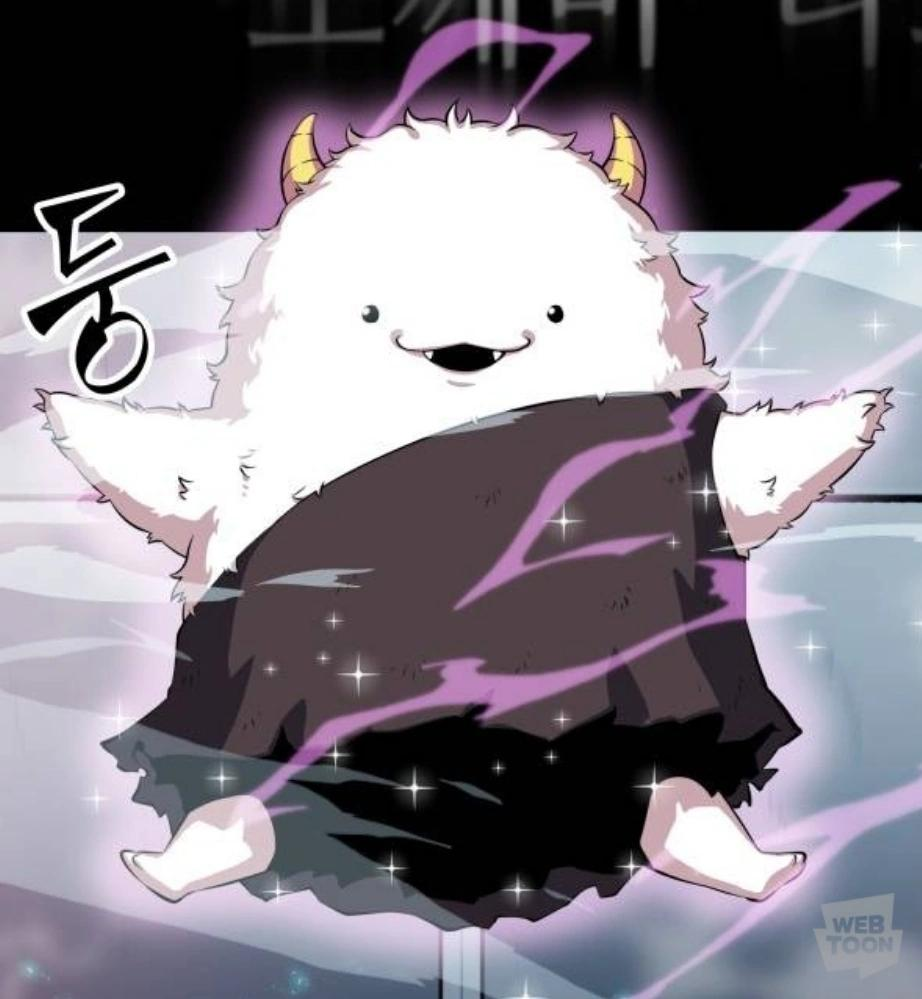

PERSONAGENS
Kim Dokja
Kim Dokja é o protagonista de Omniscient Reader's Viewpoint. Ele é um leitor que conhece o final de uma história e precisa usar esse conhecimento para sobreviver.
Características
- Inteligente e estratégico
- Conhece o conteúdo de uma novel
- Possui grande capacidade de adaptação
- Protagonista da história

Yoo Joonghyuk
Yoo Joonghyuk é o protagonista da novel "Three Ways to Survive in a Ruined World", que Kim Dokja acompanhava antes de o mundo se transformar. Ele é um regressor, alguém que consegue retornar ao passado após sua morte, mantendo suas experiências e conhecimentos. Ao longo de suas regressões, luta para sobreviver aos cenários e encontrar uma maneira de alcançar seu objetivo.
Características
- Extremamente habilidoso em combate
- Frio, sério e determinado
- Possui a habilidade de regressão
- Grande experiência em batalhas e sobrevivência
- Tem uma personalidade reservada e independente
- É um dos personagens mais poderosos da história

Yoo Sangah
Yoo Sangah é uma das principais personagens de Omniscient Reader's Viewpoint e colega de trabalho de Kim Dokja na empresa. Antes da transformação do mundo, era conhecida por sua personalidade educada, gentil e responsável. Após o início dos cenários, demonstra grande capacidade de adaptação e inteligência para enfrentar os desafios. Mesmo diante de situações perigosas, procura ajudar as pessoas ao seu redor e encontrar maneiras de sobreviver.
Características
- Educada, gentil e respeitosa
- Inteligente e observadora
- Possui grande capacidade de adaptação
- É colega de trabalho de Kim Dokja
- Demonstra coragem diante dos cenários
- Procura ajudar e proteger outras pessoas
- Possui habilidades relacionadas ao aprendizado e ao conhecimento

Lee Gilyeong
Lee Gilyeong é um dos integrantes mais jovens do grupo de Kim Dokja em Omniscient Reader's Viewpoint. Ele é um garoto que consegue se comunicar com insetos e controlar diferentes espécies por meio de suas habilidades. Sua capacidade se torna muito importante durante os cenários, permitindo localizar perigos, explorar lugares e ajudar seus companheiros. Apesar de sua pouca idade, Gilyeong demonstra coragem, inteligência e uma forte lealdade às pessoas em quem confia. Com o passar da história, desenvolve ainda mais suas habilidades e constrói uma relação próxima com os integrantes do grupo.
Características
- Consegue se comunicar com diferentes espécies de insetos
- Possui o atributo Colecionador de Insetos
- Utiliza insetos para explorar e reconhecer ambientes
- É observador e possui boa percepção das situações
- Demonstra coragem mesmo diante de grandes desafios
- É leal e protetor com seus companheiros
- Possui uma personalidade direta e determinada
- Desenvolve habilidades de controle de criaturas

Bihyung
Bihyung é um Dokkaebi responsável por transmitir e administrar os cenários iniciais de Omniscient Reader's Viewpoint. Ele acompanha os participantes através de seu canal na Star Stream, apresentando os desafios e observando o desenvolvimento dos sobreviventes. Inicialmente, preocupa-se principalmente com a audiência, as moedas e o crescimento de seu canal. Sua relação com Kim Dokja começa por meio de um contrato de transmissão, mas, com o passar da história, os dois desenvolvem uma relação de confiança e cooperação. Bihyung também passa por mudanças importantes em sua posição e personalidade, demonstrando que sua lealdade pode ir além de seus próprios interesses.
Características
- É um Dokkaebi responsável por um canal da Star Stream
- Administra e transmite os cenários
- Possui aparência pequena e coberta por pelos brancos
- É responsável pelo canal BI-7623
- Inicialmente é ambicioso e preocupado com audiência
- Possui conhecimentos sobre contratos e o sistema
- Desenvolve uma relação de cooperação com Kim Dokja
- Consegue evoluir e alcançar uma posição de grande importância entre os Dokkaebis

Kim Namwoon
Kim Namwoon é um dos personagens que aparecem nos primeiros cenários de Omniscient Reader's Viewpoint. Antes do início da crise, era um estudante do ensino médio. Ele possui cabelos brancos, olhos vermelhos e uma personalidade excêntrica, sendo conhecido pelo apelido de Demônio da Ilusão. Namwoon demonstra grande interesse por situações caóticas e acredita estar preparado para o fim do mundo. Durante os primeiros cenários, chama a atenção de Kim Dokja por sua maneira imprevisível de agir e por sua rápida adaptação à nova realidade.
Características
- É um estudante do ensino médio
- Possui cabelos brancos e olhos vermelhos
- É conhecido como Demônio da Ilusão
- Possui o atributo Chuunibyou
- Tem facilidade para se adaptar aos cenários
- É impulsivo, excêntrico e imprevisível
- Possui habilidades relacionadas ao atributo Enegrecimento
- Tem ligação com a constelação Dragão de Chamas Negras

Cheon Inho
Cheon Inho é o líder do Grupo Cheoldoo, formado por sobreviventes da Estação Geumho. Ele é um homem inteligente e manipulador, que utiliza sua capacidade de influenciar as pessoas para conseguir poder e controlar os outros sobreviventes. Inicialmente, tenta convencer Kim Dokja a se juntar ao seu grupo, mas, após receber uma recusa, passa a enxergá-lo como uma ameaça. Cheon Inho costuma agir de maneira calculista, aproveitando o medo e a insegurança das pessoas para manter sua posição de liderança.
Características
- É o líder do Grupo Cheoldoo
- É um sobrevivente da Estação Geumho
- Possui cabelos claros e aparência magra
- Costuma manter os olhos fechados
- É inteligente, calculista e manipulador
- Possui a habilidade exclusiva Incitar (Lv. 2)
- Consegue influenciar as emoções e atitudes de outras pessoas
- Utiliza sua influência para controlar os sobreviventes